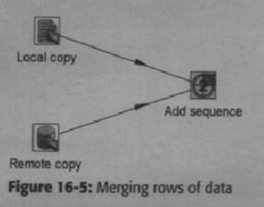
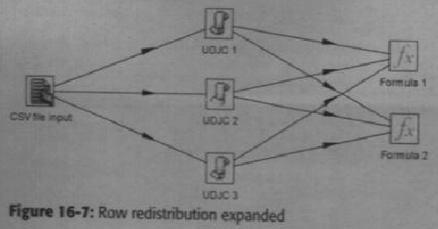
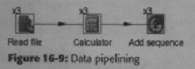
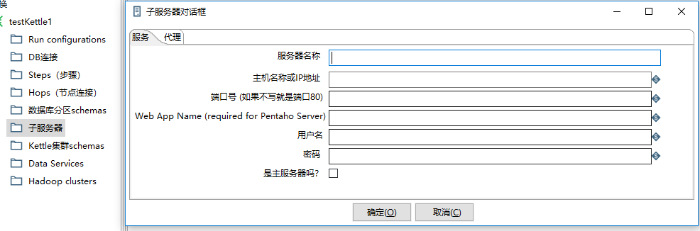
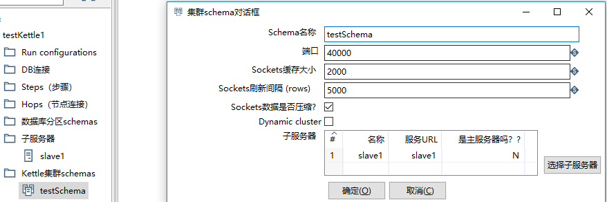
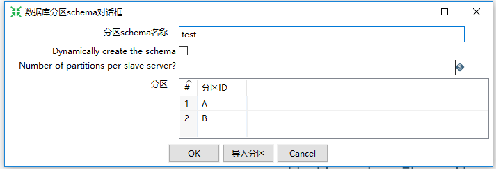

<!DOCTYPE html>
<html>
<head><meta name="generator" content="Hexo 3.9.0">
    <meta charset="utf-8">

    

    
    <title>Kettle分区、集群及并行 | Hexo</title>
    
    <meta name="viewport" content="width=device-width, initial-scale=1, maximum-scale=1">
    
        <meta name="keywords" content>
    
    <meta name="description" content="Kettle的转换和作业可以在垂直和水平方面进行扩展。 垂直扩展是尽可能利用单台服务器上的多CPU核数。水平扩展是使用多台机器资源，使他们并行计算。 下面先谈谈转换内部的并行机制。一.多线程默认情况下转换中的每一个步骤都事在单一隔离的线程里面并行执行，但可以为任何单一步骤增加线程数目，这叫做复制。这可以提高CPU时间消耗量大的转换步骤的性能。 Step：描述需要做的某项工作的定义或元数据。Step">
<meta property="og:type" content="article">
<meta property="og:title" content="Kettle分区、集群及并行">
<meta property="og:url" content="http://yoursite.com/2019/04/24/kettle4/index.html">
<meta property="og:site_name" content="Hexo">
<meta property="og:description" content="Kettle的转换和作业可以在垂直和水平方面进行扩展。 垂直扩展是尽可能利用单台服务器上的多CPU核数。水平扩展是使用多台机器资源，使他们并行计算。 下面先谈谈转换内部的并行机制。一.多线程默认情况下转换中的每一个步骤都事在单一隔离的线程里面并行执行，但可以为任何单一步骤增加线程数目，这叫做复制。这可以提高CPU时间消耗量大的转换步骤的性能。 Step：描述需要做的某项工作的定义或元数据。Step">
<meta property="og:locale" content="en">
<meta property="og:image" content="http://yoursite.com/2019/04/24/kettle4/1.png">
<meta property="og:updated_time" content="2019-08-28T08:10:26.785Z">
<meta name="twitter:card" content="summary">
<meta name="twitter:title" content="Kettle分区、集群及并行">
<meta name="twitter:description" content="Kettle的转换和作业可以在垂直和水平方面进行扩展。 垂直扩展是尽可能利用单台服务器上的多CPU核数。水平扩展是使用多台机器资源，使他们并行计算。 下面先谈谈转换内部的并行机制。一.多线程默认情况下转换中的每一个步骤都事在单一隔离的线程里面并行执行，但可以为任何单一步骤增加线程数目，这叫做复制。这可以提高CPU时间消耗量大的转换步骤的性能。 Step：描述需要做的某项工作的定义或元数据。Step">
<meta name="twitter:image" content="http://yoursite.com/2019/04/24/kettle4/1.png">
    

    
        <link rel="alternate" href="/atom.xml" title="Hexo" type="application/atom+xml">
    

    
        <link rel="icon" href="/images/logo-header.png">
    

    <link rel="stylesheet" href="/libs/font-awesome/css/font-awesome.min.css">
    <link rel="stylesheet" href="/libs/titillium-web/styles.css">
    <link rel="stylesheet" href="/libs/source-code-pro/styles.css">

    <link rel="stylesheet" href="/css/style.css">

    <script src="/libs/jquery/3.3.1/jquery.min.js"></script>
    
    
        <link rel="stylesheet" href="/libs/lightgallery/css/lightgallery.min.css">
    
    
        <link rel="stylesheet" href="/libs/justified-gallery/justifiedGallery.min.css">
    
    
    


</head>
</html>
<body>
    <div id="wrap">
        <header id="header">
    <div id="header-outer" class="outer">
        <div class="container">
            <div class="container-inner">
                <div id="header-title">
                    <!-- <h1 class="logo-wrap">
                        <a href="/" class="logo"></a>
                    </h1> -->
                    
                </div>
                <div id="header-inner" class="nav-container">
                    <a id="main-nav-toggle" class="nav-icon fa fa-bars"></a>
                    <div class="nav-container-inner">
                        <ul id="main-nav">
                            
                                <li class="main-nav-list-item" >
                                    <a class="main-nav-list-link" href="/">Home</a>
                                </li>
                            
                                        
                                    
                                <li class="main-nav-list-item" >
                                    <a class="main-nav-list-link" href="/about/index.html">About</a>
                                </li>
                            
                        </ul>
                        <nav id="sub-nav">
                            <div id="search-form-wrap">

    <form class="search-form">
        <input type="text" class="ins-search-input search-form-input" placeholder="Search" />
        <button type="submit" class="search-form-submit"></button>
    </form>
    <div class="ins-search">
    <div class="ins-search-mask"></div>
    <div class="ins-search-container">
        <div class="ins-input-wrapper">
            <input type="text" class="ins-search-input" placeholder="Type something..." />
            <span class="ins-close ins-selectable"><i class="fa fa-times-circle"></i></span>
        </div>
        <div class="ins-section-wrapper">
            <div class="ins-section-container"></div>
        </div>
    </div>
</div>
<script>
(function (window) {
    var INSIGHT_CONFIG = {
        TRANSLATION: {
            POSTS: 'Posts',
            PAGES: 'Pages',
            CATEGORIES: 'Categories',
            TAGS: 'Tags',
            UNTITLED: '(Untitled)',
        },
        ROOT_URL: '/',
        CONTENT_URL: '/content.json',
    };
    window.INSIGHT_CONFIG = INSIGHT_CONFIG;
})(window);
</script>
<script src="/js/insight.js"></script>

</div>
                        </nav>
                    </div>
                </div>
            </div>
        </div>
    </div>
</header>
        <div class="container">
            <div class="main-body container-inner">
                <div class="main-body-inner">
                    <section id="main">
                        <div class="main-body-header">
    <h1 class="header">
    
    uncategorized
    </h1>
</div>

                        <div class="main-body-content">
                            <article id="post-kettle4" class="article article-single article-type-post" itemscope itemprop="blogPost">
    <div class="article-inner">
        
            <header class="article-header">
                
    
        <h1 class="article-title" itemprop="name">
        Kettle分区、集群及并行
        </h1>
    

            </header>
        
        
            <div class="article-meta">
                
    <div class="article-date">
        <a href="/2019/04/24/kettle4/" class="article-date">
            <time datetime="2019-04-24T08:15:09.000Z" itemprop="datePublished">2019-04-24</time>
        </a>
    </div>

		

                
            </div>
        
        
        <div class="article-entry" itemprop="articleBody">
            <pre><code>Kettle的转换和作业可以在垂直和水平方面进行扩展。
垂直扩展是尽可能利用单台服务器上的多CPU核数。水平扩展是使用多台机器资源，使他们并行计算。
下面先谈谈转换内部的并行机制。</code></pre><h3 id="一-多线程"><a href="#一-多线程" class="headerlink" title="一.多线程"></a>一.多线程</h3><pre><code>默认情况下转换中的每一个步骤都事在单一隔离的线程里面并行执行，但可以为任何单一步骤增加线程数目，这叫做复制。这可以提高CPU时间消耗量大的转换步骤的性能。</code></pre><p></p>
<p><strong>Step：描述需要做的某项工作的定义或元数据。</strong><br><strong>Step copy：在步骤里定义的执行某项工作的一个并行工作线程</strong><br>    step仅仅是任务的定义，而一个step copy则表示一个实际执行的任务。</p>
<h4 id="记录行分发"><a href="#记录行分发" class="headerlink" title="记录行分发"></a>记录行分发</h4><pre><code>记录怎样分发给目标步骤复制？默认下，分发以循环方式执行。比如有N份复制，第一份复制获取第一条，第二份复制获取第二条，以此类推。</code></pre><h4 id="记录行合并"><a href="#记录行合并" class="headerlink" title="记录行合并"></a>记录行合并</h4><pre><code>记录合并发生在几个步骤或步骤复制发送多条记录给单个步骤复制时。</code></pre><p></p>
<h4 id="记录行再分发"><a href="#记录行再分发" class="headerlink" title="记录行再分发"></a>记录行再分发</h4><pre><code>在记录行再分发里，有X个步骤复制发送记录集给Y个目标步骤复制。</code></pre><p><br>    其等同于下图：<br></p>
<h4 id="数据流水线"><a href="#数据流水线" class="headerlink" title="数据流水线"></a>数据流水线</h4><pre><code>数据流水线是再分发的一个特例，它的来源和目标步骤复制是一样的（X==Y）。这种情况下，记录集不是通过所有步骤复制被再分发的，相反，由源步骤复制1产生的记录集被发送到具有相同编号的目标步骤复制。
例如：</code></pre><p><br>    等同于以下转换：<br><br>    分发和合并记录行的过程中有一些可衡量的开销，通常情况下，<br><strong>最好让连续的步骤复制数目保持一致，用来减少这个开销。</strong></p>
<h3 id="二-多线程的后果"><a href="#二-多线程的后果" class="headerlink" title="二.多线程的后果"></a>二.多线程的后果</h3><pre><code>转换的多线程可能造成的后果，以及如何处理。</code></pre><h4 id="数据库连接"><a href="#数据库连接" class="headerlink" title="数据库连接"></a>数据库连接</h4><pre><code>如果再转换执行的过程中为每个线程创建单一链接，那么每个步骤复制都打开它们自己单独的事务或者事务集。
这会导致一个潜在后果，就是使用同一个数据库资源场景下（比如一张表），会发生条件竞争。
一个典型场景是当往一个关系数据表里写入数据并在随后步骤读回时，不能确保第一个步骤写入数据可见于其他执行读操作的步骤。</code></pre><p><strong>解决方法：</strong><br>    可以强制所有步骤使用单一数据库连接，启用转换设置对话框中的“Make the transformation database transcational”，这样会降低转换性能。</p>
<h4 id="执行顺序"><a href="#执行顺序" class="headerlink" title="执行顺序"></a>执行顺序</h4><pre><code>转换中的步骤没有特定执行顺序，如果需要按顺序执行，可以创建一个作业。也可以用以下几个技巧：</code></pre><p><strong>Blocking步骤</strong><br>    Blocking步骤在默认配置下是简单的吃掉所有记录行后，才将最后一条记录行传递给下一个步骤。</p>
<h4 id="作业中的并行执行"><a href="#作业中的并行执行" class="headerlink" title="作业中的并行执行"></a>作业中的并行执行</h4><pre><code>可以在作业里并行执行作业项，如下所示：</code></pre><p></p>
<h3 id="三-用Carte作为子服务器"><a href="#三-用Carte作为子服务器" class="headerlink" title="三.用Carte作为子服务器"></a>三.用Carte作为子服务器</h3><pre><code>子服务器是在远程服务器上执行转换和作业的一个组成模块。Carte是一个轻量级的服务器进程，可以远程监控和开启转换集群的能力。
   子服务器是集群的最小组成模块。它是一个小型的HTTP服务器，用来接收远程客户端的命令，这些命令控制了自服务器上的作业和转换的部署、管理和监控。
启动一个子服务器：
sh carte.sh server1 8181</code></pre><h4 id="定义子服务器"><a href="#定义子服务器" class="headerlink" title="定义子服务器"></a>定义子服务器</h4><pre><code>如图所示：</code></pre><p></p>
<h3 id="四-集群转换"><a href="#四-集群转换" class="headerlink" title="四.集群转换"></a>四.集群转换</h3><pre><code>集群技术可以用来水平扩展转换，使得他们能够同时运行在多台服务器上。它将转换的工作量均分到不同的服务器上。这部分将介绍如何配置和执行一个转换，让其运行在多台机器上。
   一个集群schema由一台主服务器，和一起子服务器组成，主服务器作为一个集群的控制器。
一个集群schema也包含元数据，记录主服务器和子服务器之间怎样来回传递数据。在Carte服务器之间传递数据是通过TCP/IP套接字。
注意：要想使得一台子服务器变成主服务器，可以简单地在子服务器的复选框里勾选“is the master”。</code></pre><h4 id="定义一个集群schema"><a href="#定义一个集群schema" class="headerlink" title="定义一个集群schema"></a>定义一个集群schema</h4><pre><code>在定义一个集群schema之前，需要定义一些子服务器。
新建集群schema如下图所示：</code></pre><p></p>
<ul>
<li>端口：TCP/IP socket端口用来传输数据从一台子服务器到另一台。</li>
<li>Sockets缓存大小：用来缓解子服务器之间通信。</li>
<li>Dynamic Cluster：启用时，会使Kettle在主服务器上动态搜索，决定schema的子服务器的列表。</li>
</ul>
<h4 id="设计集群转换"><a href="#设计集群转换" class="headerlink" title="设计集群转换"></a>设计集群转换</h4><pre><code>要设计一个集群转换，得先建立一个标准的转换，然后将其变为集群类型的。创建一个集群schema，选择想要在其上运行的步骤，右击这个步骤，选择想要执行这个步骤的集群。
当执行这个转换，所有被定义成集群运行（有C*1）的步骤都将运行在这个子服务器上，而没有标识的步骤运行在主服务器上。</code></pre><h4 id="Kettle集群的缺点"><a href="#Kettle集群的缺点" class="headerlink" title="Kettle集群的缺点"></a>Kettle集群的缺点</h4><pre><code>Kettle集群能在部分服务器宕机的情况下继续使用。在Kettle中集群是由一个主Carte服务器和多个从Carte服务器组成。在执行转换时，主服务器负责分发跟踪任务和收集结果汇总，从服务器负责具体的转换执行。在Kettle中，如果主服务器也宕机的话并不存在服务器重新选举的功能（类似redis、zookeeper），一旦主服务器宕机，则Kettle集群就不能使用了。</code></pre><h3 id="五-分区"><a href="#五-分区" class="headerlink" title="五.分区"></a>五.分区</h3><h4 id="定义一个分区"><a href="#定义一个分区" class="headerlink" title="定义一个分区"></a>定义一个分区</h4><p><strong>Kettle中的分区是指kettle可以根据一个分区规则引导数据记录行到某一个步骤复制（步骤的多线程）的能力。</strong><br>    在kettle中，一组给定的分区集叫做分区schema，规则本身叫做分区方法。分区schema要么包含一命名的分区列表，要么简单的包含数个分区。分区方法不是分区schema的一部分。<br>       如下图所示为新建一个分区：<br><br>    一旦这个分区schema定义，在转换李，可以根据一个分区方法应用它到一个步骤。当在这个步骤菜单上选择分区选项时，会弹出一个对话框让你选择使用哪个分区方法。</p>

        </div>
        <footer class="article-footer">
            


    <a data-url="http://yoursite.com/2019/04/24/kettle4/" data-id="cjzuznqku0009p0uyv9zt6f5x" class="article-share-link"><i class="fa fa-share"></i>Share</a>
<script>
    (function ($) {
        $('body').on('click', function() {
            $('.article-share-box.on').removeClass('on');
        }).on('click', '.article-share-link', function(e) {
            e.stopPropagation();

            var $this = $(this),
                url = $this.attr('data-url'),
                encodedUrl = encodeURIComponent(url),
                id = 'article-share-box-' + $this.attr('data-id'),
                offset = $this.offset(),
                box;

            if ($('#' + id).length) {
                box = $('#' + id);

                if (box.hasClass('on')){
                    box.removeClass('on');
                    return;
                }
            } else {
                var html = [
                    '<div id="' + id + '" class="article-share-box">',
                        '<input class="article-share-input" value="' + url + '">',
                        '<div class="article-share-links">',
                            '<a href="https://twitter.com/intent/tweet?url=' + encodedUrl + '" class="article-share-twitter" target="_blank" title="Twitter"></a>',
                            '<a href="https://www.facebook.com/sharer.php?u=' + encodedUrl + '" class="article-share-facebook" target="_blank" title="Facebook"></a>',
                            '<a href="http://pinterest.com/pin/create/button/?url=' + encodedUrl + '" class="article-share-pinterest" target="_blank" title="Pinterest"></a>',
                            '<a href="https://plus.google.com/share?url=' + encodedUrl + '" class="article-share-google" target="_blank" title="Google+"></a>',
                        '</div>',
                    '</div>'
                ].join('');

              box = $(html);

              $('body').append(box);
            }

            $('.article-share-box.on').hide();

            box.css({
                top: offset.top + 25,
                left: offset.left
            }).addClass('on');

        }).on('click', '.article-share-box', function (e) {
            e.stopPropagation();
        }).on('click', '.article-share-box-input', function () {
            $(this).select();
        }).on('click', '.article-share-box-link', function (e) {
            e.preventDefault();
            e.stopPropagation();

            window.open(this.href, 'article-share-box-window-' + Date.now(), 'width=500,height=450');
        });
    })(jQuery);
</script>

        </footer>
    </div>
    <script type="application/ld+json">
    {
        "@context": "https://schema.org",
        "@type": "BlogPosting",
        "author": {
            "@type": "Person",
            "name": "John Doe"
        },
        "headline": "Kettle分区、集群及并行",
        "image": "http://yoursite.com1.png",
        "keywords": "",
        "genre": "",
        "datePublished": "2019-04-24",
        "dateCreated": "2019-04-24",
        "dateModified": "2019-08-28",
        "url": "http://yoursite.com/2019/04/24/kettle4/",
        "description": "Kettle的转换和作业可以在垂直和水平方面进行扩展。
垂直扩展是尽可能利用单台服务器上的多CPU核数。水平扩展是使用多台机器资源，使他们并行计算。
下面先谈谈转换内部的并行机制。一.多线程默认情况下转换中的每一个步骤都事在单一隔离的线程里面并行执行，但可以为任何单一步骤增加线程数目，这叫做复制。这可以提高CPU时间消耗量大的转换步骤的性能。
Step：描述需要做的某项工作的定义或元数据。Step"
        "wordCount": 147
    }
</script>

</article>

    <section id="comments">
    
        
    <div id="disqus_thread">
        <noscript>Please enable JavaScript to view the <a href="//disqus.com/?ref_noscript">comments powered by Disqus.</a></noscript>
    </div>

    
    </section>


                        </div>
                    </section>
                    <aside id="sidebar">
    <a class="sidebar-toggle" title="Expand Sidebar"><i class="toggle icon"></i></a>
    <div class="sidebar-top">
        <p>follow:</p>
        <ul class="social-links">
            
                
                <li>
                    <a class="social-tooltip" title="github" href="https://github.com/ppoffice/hexo-theme-hueman" target="_blank" rel="noopener">
                        <i class="icon fa fa-github"></i>
                    </a>
                </li>
                
            
                
                <li>
                    <a class="social-tooltip" title="weibo" href="https://zividoor.github.io" target="_blank" rel="noopener">
                        <i class="icon fa fa-weibo"></i>
                    </a>
                </li>
                
            
                
                <li>
                    <a class="social-tooltip" title="rss" href="/atom.xml" target="_blank" rel="noopener">
                        <i class="icon fa fa-rss"></i>
                    </a>
                </li>
                
            
        </ul>
    </div>
    
        
<nav id="article-nav">
    
        <a href="/2019/04/25/kettle5/" id="article-nav-newer" class="article-nav-link-wrap">
        <strong class="article-nav-caption">newer</strong>
        <p class="article-nav-title">
        
            kettle脚本开发示例
        
        </p>
        <i class="icon fa fa-chevron-right" id="icon-chevron-right"></i>
    </a>
    
    
        <a href="/2019/04/24/kettle3/" id="article-nav-older" class="article-nav-link-wrap">
        <strong class="article-nav-caption">older</strong>
        <p class="article-nav-title">Kettle 集群开发</p>
        <i class="icon fa fa-chevron-left" id="icon-chevron-left"></i>
        </a>
    
</nav>

    
    <div class="widgets-container">
        
            
                

            
                
    <div class="widget-wrap">
        <h3 class="widget-title">recents</h3>
        <div class="widget">
            <ul id="recent-post" class="">
                
                    <li>
                        
                        <div class="item-thumbnail">
                            <a href="/2019/08/28/hello-world/" class="thumbnail">
    
    
        <span class="thumbnail-image thumbnail-none"></span>
    
    
</a>

                        </div>
                        
                        <div class="item-inner">
                            <p class="item-category"></p>
                            <p class="item-title"><a href="/2019/08/28/hello-world/" class="title">Hello World</a></p>
                            <p class="item-date"><time datetime="2019-08-28T08:19:05.015Z" itemprop="datePublished">2019-08-28</time></p>
                        </div>
                    </li>
                
                    <li>
                        
                        <div class="item-thumbnail">
                            <a href="/2019/05/20/JMS-3/" class="thumbnail">
    
    
        <span class="thumbnail-image thumbnail-none"></span>
    
    
</a>

                        </div>
                        
                        <div class="item-inner">
                            <p class="item-category"></p>
                            <p class="item-title"><a href="/2019/05/20/JMS-3/" class="title">消息中间件选型分析</a></p>
                            <p class="item-date"><time datetime="2019-05-20T06:58:28.000Z" itemprop="datePublished">2019-05-20</time></p>
                        </div>
                    </li>
                
                    <li>
                        
                        <div class="item-thumbnail">
                            <a href="/2019/05/15/linux-1/" class="thumbnail">
    
    
        <span class="thumbnail-image thumbnail-none"></span>
    
    
</a>

                        </div>
                        
                        <div class="item-inner">
                            <p class="item-category"></p>
                            <p class="item-title"><a href="/2019/05/15/linux-1/" class="title">linux各个文件夹的作用</a></p>
                            <p class="item-date"><time datetime="2019-05-15T08:41:45.000Z" itemprop="datePublished">2019-05-15</time></p>
                        </div>
                    </li>
                
                    <li>
                        
                        <div class="item-thumbnail">
                            <a href="/2019/05/09/oracle-1/" class="thumbnail">
    
    
        <span class="thumbnail-image thumbnail-none"></span>
    
    
</a>

                        </div>
                        
                        <div class="item-inner">
                            <p class="item-category"></p>
                            <p class="item-title"><a href="/2019/05/09/oracle-1/" class="title">Oracle 使用笔记</a></p>
                            <p class="item-date"><time datetime="2019-05-09T06:41:41.000Z" itemprop="datePublished">2019-05-09</time></p>
                        </div>
                    </li>
                
                    <li>
                        
                        <div class="item-thumbnail">
                            <a href="/2019/05/07/AOP-1/" class="thumbnail">
    
    
        <span style="background-image:url(1.png)" alt="SpringAOP中通过JoinPoint获取参数名和值" class="thumbnail-image"></span>
    
    
</a>

                        </div>
                        
                        <div class="item-inner">
                            <p class="item-category"></p>
                            <p class="item-title"><a href="/2019/05/07/AOP-1/" class="title">SpringAOP中通过JoinPoint获取参数名和值</a></p>
                            <p class="item-date"><time datetime="2019-05-07T08:10:27.000Z" itemprop="datePublished">2019-05-07</time></p>
                        </div>
                    </li>
                
            </ul>
        </div>
    </div>

            
                

            
                
    <div class="widget-wrap widget-list">
        <h3 class="widget-title">archives</h3>
        <div class="widget">
            <ul class="archive-list"><li class="archive-list-item"><a class="archive-list-link" href="/archives/2019/08/">August 2019</a><span class="archive-list-count">1</span></li><li class="archive-list-item"><a class="archive-list-link" href="/archives/2019/05/">May 2019</a><span class="archive-list-count">7</span></li><li class="archive-list-item"><a class="archive-list-link" href="/archives/2019/04/">April 2019</a><span class="archive-list-count">10</span></li></ul>
        </div>
    </div>


            
                
    <div class="widget-wrap widget-list">
        <h3 class="widget-title">tags</h3>
        <div class="widget">
            <ul class="tag-list"><li class="tag-list-item"><a class="tag-list-link" href="/tags/linux/">linux</a><span class="tag-list-count">1</span></li></ul>
        </div>
    </div>


            
                
    <div class="widget-wrap widget-float">
        <h3 class="widget-title">tag cloud</h3>
        <div class="widget tagcloud">
            <a href="/tags/linux/" style="font-size: 10px;">linux</a>
        </div>
    </div>


            
                
    <div class="widget-wrap widget-list">
        <h3 class="widget-title">communiation</h3>
        <div class="widget">
            <!-- 这里添加侧边栏内容 -->
            this test
        </div>
    </div>


            
                
    <div class="widget-wrap widget-list">
        <h3 class="widget-title">links</h3>
        <div class="widget">
            <ul>
                
                    <li>
                        <a href="http://hexo.io">Hexo</a>
                    </li>
                
            </ul>
        </div>
    </div>


            
        
    </div>
</aside>

                </div>
            </div>
        </div>
        <footer id="footer">
    <div class="container">
        <div class="container-inner">
            <a id="back-to-top" href="javascript:;"><i class="icon fa fa-angle-up"></i></a>
            <div class="credit">
                <!-- <h1 class="logo-wrap">
                    <a href="/" class="logo"></a>
                </h1> -->
                <p>&copy; 2019 John Doe</p>
                <p>Powered by <a href="//hexo.io/" target="_blank">Hexo</a>. Theme by <a href="//github.com/ppoffice" target="_blank">PPOffice</a></p>
            </div>
            <div class="footer-plugins">
              
    


            </div>
        </div>
    </div>
</footer>

        
    
    <script>
    var disqus_shortname = 'hexo-theme-hueman';
    
    
    var disqus_url = 'http://yoursite.com/2019/04/24/kettle4/';
    
    (function() {
    var dsq = document.createElement('script');
    dsq.type = 'text/javascript';
    dsq.async = true;
    dsq.src = '//' + disqus_shortname + '.disqus.com/embed.js';
    (document.getElementsByTagName('head')[0] || document.getElementsByTagName('body')[0]).appendChild(dsq);
    })();
    </script>


    
        <script src="/libs/lightgallery/js/lightgallery.min.js"></script>
        <script src="/libs/lightgallery/js/lg-thumbnail.min.js"></script>
        <script src="/libs/lightgallery/js/lg-pager.min.js"></script>
        <script src="/libs/lightgallery/js/lg-autoplay.min.js"></script>
        <script src="/libs/lightgallery/js/lg-fullscreen.min.js"></script>
        <script src="/libs/lightgallery/js/lg-zoom.min.js"></script>
        <script src="/libs/lightgallery/js/lg-hash.min.js"></script>
        <script src="/libs/lightgallery/js/lg-share.min.js"></script>
        <script src="/libs/lightgallery/js/lg-video.min.js"></script>
    
    
        <script src="/libs/justified-gallery/jquery.justifiedGallery.min.js"></script>
    
    


<!-- Custom Scripts -->
<script src="/js/main.js"></script>

    </div>
</body>
</html>
